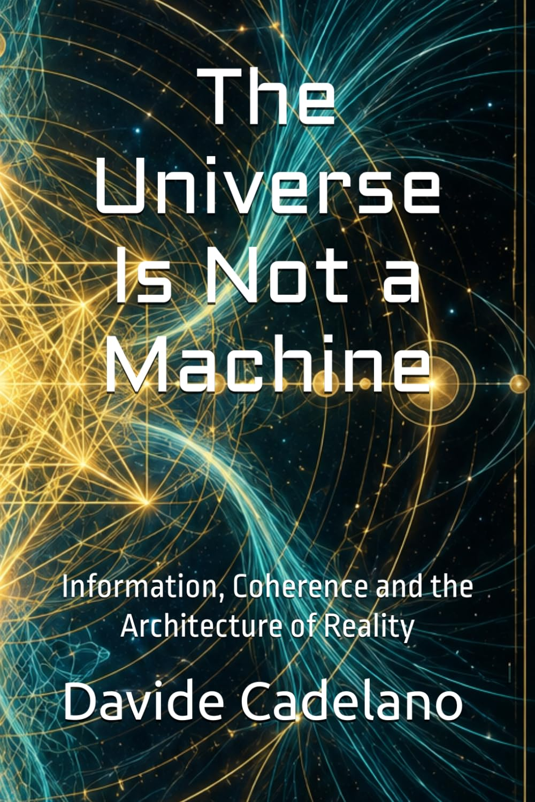
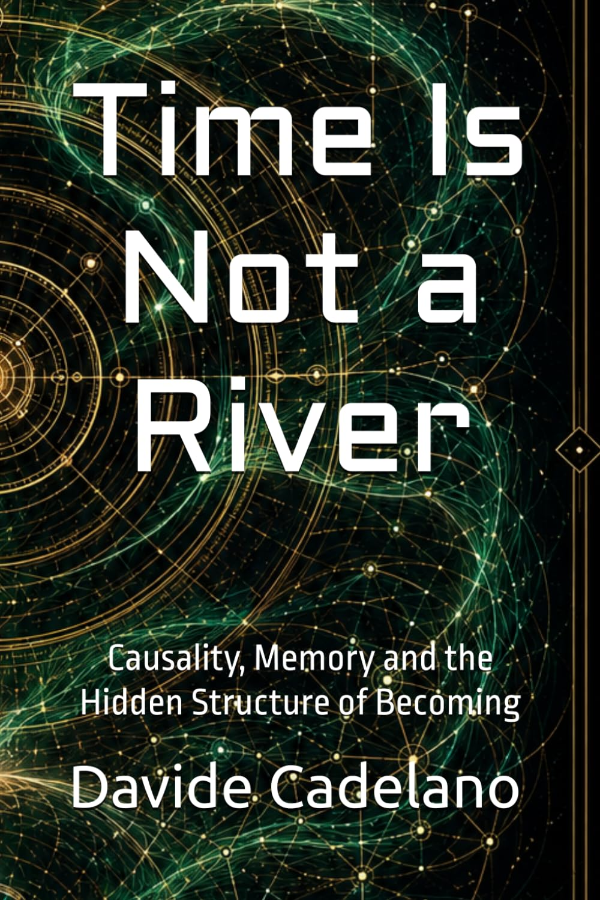

The Universe Is Not a Machine
Why the classical image of reality as a predictable mechanism is no longer sufficient after relativity, quantum theory, thermodynamics of information and the physics of emergence.
Codex Alpha is an independent theoretical physics research programme exploring informational gravity and emergent spacetime — the hypothesis that the universe is not a machine but an information processing system, where spacetime, gravitational dynamics and quantum phenomena arise from a deeper informational coherence structure governed by the gradient ∇𝒦.
Codex Alpha is structured as four distinct layers with different epistemic status, so the theory can be evaluated on the merits of each part rather than as a single undifferentiated claim.
The minimal effective continuous sector, derived from an explicit variational principle. Recovers General Relativity in the ∇𝒦 → 0 limit and is free of Ostrogradsky ghosts in its minimal sector.
Published DOI 10.5281/zenodo.20355167 →The full extended research programme: the Telascura substrate, nodal structures, informational curvature, retrocausal operators and the biological bridge.
Submitted to Physical Review D · under review DOI 10.5281/zenodo.17074972 →A closed-beta demonstrator for AI-assisted triage of Gaia DR3 data — anomaly detection, graph-based ranking and interpretability, built to test the framework against real observational data.
Active development DOI 10.5281/zenodo.20335018 →An 11-volume series of narrative science essays translating the paradigm shift for a general audience — kept deliberately separate from the scientific evidence above.
2 of 11 volumes published See the books →The recurring themes that connect the theoretical, computational and collaborative layers of Codex Alpha's research programme in theoretical physics.
Development of coherence-weighted gravitational dynamics, where effective energy-momentum response is controlled by the local coherence gradient ∇𝒦.
Study of spacetime geometry as an effective continuous approximation emerging from a deeper informational network structure.
Investigation of possible deviations in post-Newtonian regimes, gravitational lensing, perturbations and gravitational-wave propagation.
Data-oriented workflows for anomaly detection, crossmatching, candidate ranking, graph modeling and interpretable exploratory analysis.
Variational methods, ADM decomposition, small-gradient expansions, stability analysis and recovery of General Relativity in the uniform-coherence limit.
Open theoretical and computational collaborations, including geometric, fractal, torsional and inference-based approaches relevant to fundamental physics.
Codex Alpha does not operate in isolation. Selected collaborative work with mathematician Louis-François Claro extends the framework's geometric methods to some of the most difficult open problems in mathematical physics, via 5D Higgs-Torsion geometry and fractal dimensionality.
Proposal of a unified resolution of the Yang–Mills mass gap via 5D Higgs-Torsion geometry and fractal control.
A unified treatment of the Navier–Stokes equations, N-body dynamics and cosmology via 5D Higgs-Torsion geometry.
Proposal of a complete solution of the Navier–Stokes equations via 5D Higgs-Torsion geometry and information dimension.
Proposal of a resolution of the gravitational N-body problem in 5D via Higgs-Torsion gradient and information dimension.
Unified synthesis of the Yang–Mills mass gap, Navier–Stokes, the N-body problem and cosmology through geometric-fractal methods.
A popular science series translating the deepest conceptual consequences of modern physics for a general audience, without reducing them to slogans. Each volume follows one fundamental intuition and shows how contemporary science forces us to refine it.

Why the classical image of reality as a predictable mechanism is no longer sufficient after relativity, quantum theory, thermodynamics of information and the physics of emergence.

Time, causality, memory, entropy and relativity — and the possibility that time may be real and measurable without being a fundamental ingredient of nature.
Nine more volumes are planned in the series.
The research manuscripts remain openly accessible through DOI releases. Paperback and Kindle editions are offered for readers who prefer a physical study format and wish to support independent research.

A compact technical manuscript deriving the minimal variational structure of the effective continuous Codex Alpha dynamics.
Research DOI: 10.5281/zenodo.20355167

The full theoretical monograph of the Codex Alpha framework, available in Kindle and Paperback formats.
Research DOI: 10.5281/zenodo.17074972
An AI-assisted infrastructure for computational cosmology: exploratory analysis of cosmological structures, anomaly detection, graph-based modeling, ranking and interpretability, built to move from formal predictions toward testable, data-driven workflows.
Not a replacement for theoretical derivation — the computational and exploratory layer of the project, designed to help test formal predictions against real data.
Closed-beta demonstrator running on a 1,000-source ESA Gaia DR3 sample: Isolation Forest anomaly scoring, relational graph modeling and a 50-candidate ranked pool.
Link prediction, interpretable embeddings, crossmatching workflows, physics-informed constraints and interactive notebooks for direct browser-based exploration.
The pipeline, model code and dataset structure are openly hosted on GitHub. Interactive notebooks for running the pipeline directly from the browser are planned for a future release.
How the theory is meant to be tested — three protocols ordered from what is already underway to what depends on future observational missions.
Searching ESA Gaia DR3 for statistical deviations in proper motion and structure that align with predicted coherence gradients.
Demonstrating the predicted retrocausal correlation structure on IBM Qiskit quantum hardware.
Searching for coherence signatures in cluster alignment and B-mode polarization data from Euclid and LISA.
Codex Alpha Research is open to technically serious collaborations in mathematical physics, computational cosmology, AI-assisted analysis, graph modeling, simulation design and observational validation.
Especially interested in collaborators able to contribute to rigorous theoretical review, numerical prototyping, simulation design, dataset integration, graph-based modeling, anomaly detection, interpretability and reproducible research infrastructure.
Suitable profiles include independent researchers, physicists, mathematicians, ML engineers, computational scientists, data analysts, visualization specialists and research-oriented developers.
Submissions are intended for research collaboration only. Please include a concise technical contribution, not a generic promotional message.
Davide Cadelano is an independent theoretical physicist and researcher working on gravitational models, quantum frameworks, emergent spacetime and the unification of physical laws. He leads the formal and conceptual development of Codex Alpha — Unified Field Theory, a research framework in which spacetime is modeled as emerging from an informational coherence structure through gradients of the scalar field ∇𝒦.
The construction is covariant, recovers General Relativity in the ∇𝒦 → 0 limit, and predicts testable departures in cosmological, gravitational-wave, lensing and weak-field regimes. His work sits at the interface between mathematical modeling, quantum mechanics and general relativity, with emphasis on variational principles, emergent geometry, perturbation theory, metric generation and energy–momentum dynamics.
Recent technical results include linear-response kernels, small-gradient expansions, FRW background and perturbation analysis, modified tensor-mode propagation, an ADM Hamiltonian formulation, TOV equations with informational contributions, black-hole thermodynamic extensions and stability analysis. Codex Alpha 3.0 — Iconoclast Edition, the full theoretical architecture of the project, has been submitted to Physical Review D and is currently under peer review.
Codex Alpha introduces the Telascura: a coherent quantum-informational structure from which spacetime is treated as an effective emergent geometry, developed through explicit assumptions, variational principles, computational workflows and falsifiable predictions.
Email
davide.cadelano@codexalpha.org
ORCID
0009-0008-2253-7008
GitHub
github.com/Miriadenera
LinkedIn
davide-cadelano-5b68a936a
X
@QIM_METATRON
Instagram
@codexalpharesearch